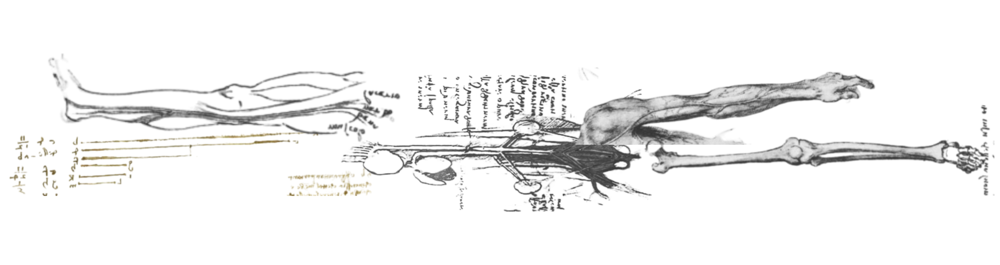

Scripting and Designing
December 17, 2025
Python Scripting in NextJS
A big issue for me with NextJS was that I don't really understand javascript or the scripting language that the NextJS projects use. This was pretty limiting because I couldn't create any any complicated functionality. Today I discovered that you could create functionality in python, print whatever output you want to a terminal or write to a file, and then call it from the nextjs route.ts thing or whatever. So now I have a lot more freedom to write logic for the website so i'm super excited. With this, today I made two scripts. One script webscrapes the BBC website for the latest podcast link. It basically finds an 'a' tag and tries to find an href with .mp3. Then, I rewrite it back to an mp3 file in the directory for later access. The seconds cript uses the whisper model to convert audio to text and write it to a txt file. Later this information is going to be used with ollama in order to add the 'interactive' part. I have a couple more ideas on this interactive part that I will talk about a little later.
Designing
Today I did a lot of designing! The main vibe is mixing a lot of reinassance studies from Da Vinci, Michelangelo, and Raphael with modern technology like terminals and shifting letters. I saw a couple posters a long time ago with this vibe and I thought it was pretty cool. At first, the meaning behind it was that the truly informed person should be 'balanced', as in able to see the pros and cons of any argument despite biases, etc... Therefore, I used a lot of anatomical drawings from da Vinci because it represented 'proportions' and therefore 'balance', but after a while I just liked the look of them and started going crazy. I'm on purposely making the website busy because I just want to make something that I like to look at and enjoy the detail of. I added a quick shot of a bar that is used in the web design.

Next Steps
The main thing is thinking about different ways to add interactivity now that I have the podcast transcript. I'm thinking that the little bar on the left side of the page should keep track of the major headlines for quick reference. Possible ideas include a chatbot that allows you to ask questions about the podcast in a similiar way that the presidents ask the analyst questions about the information. That will be difficult, so possibly that will be last. I think ollama could also be prompted to include historical information relating to some of the events happening, what the moral of those stories are. It can also provide objective critiques for possible stances. Any one of these would be great.